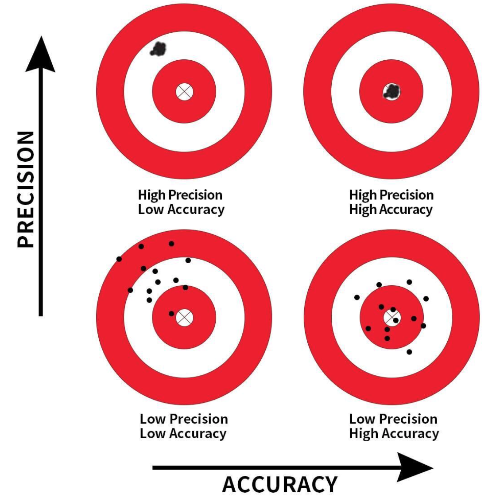

MGMT 17300: Data Mining Lab
Supervised Learning: Linear Regression
Professor: Davi Moreira
Overview
Association Between Two Variables
Model
Supervised and Unsupervised Learning
Supervised Learning: Regression
Simple Linear Regression Example: Advertising Spend
Multiple Regression Model
Multiple Regression Model Example
Comparing Single and Multiple Regression Models
Predicting Sales with a Regression Model
Comparing Prediction Performance
Association Between Two Variables
Covariance

- The Covariance is a measure of the linear association between two variables.
- Positive values indicate a positive relationship.
- Negative values indicate a negative relationship.
Correlation Coefficient
Correlation is a unit-free measure of linear association and not necessarily causation.
The coefficient can take on values between −1 and +1.
- Values near −1 indicate a strong negative linear relationship.
- Values near +1 indicate a strong positive linear relationship.
The closer the correlation is to zero, the weaker the linear relationship.
Model
What is a model?
All models are wrong, but some are useful.
George Box
What does it mean to “model” data?
Let’s start with a very simple premise:
- to model, we need to make explicit the conditions under which a variable \(X\) is related to a variable \(Y\).
Let’s begin by giving specific names to these variables:
Dependent Variable (DV): This is our phenomenon of interest, usually denoted as \(Y\).
Independent Variable (IV): This is the phenomenon that explains/describe our dependent variable, generally denoted as \(X\).
What does it mean to “model” data?
Mathematically, we model \(Y\) as a function of \(X\). Statistically, modeling can serve two main purposes:
Prediction: The possibility of using the values of \(X\) to predict the value of \(Y\). There must be a substantive connection between these two variables for one to generate reliable predictions about the values of the other.
Explanation: Used to understand the connection and significance (both substantive and statistical) of the relationship between two variables. In this case, we aim to accurately estimate the impact of one variable on the other, preferably excluding any potential omitted variables.
Creating a Simulated Tech Dataset
Creating a Simulated Tech Dataset
We simulate a dataset that represents a hypothetical tech company’s business data. This dataset includes key variables that influence sales, based on realistic business scenarios. The aim is to illustrate how these variables interact and impact overall sales performance.
Variables:
- Advertising Spend (
adv_spend): Monthly advertising budget, reflecting marketing investment (in thousands of USD). - Product Complexity (
prod_complex): A measure of the complexity of the product, scored on a scale from 1 (least complex) to 10 (most complex). - Customer Support Rating (
support_rating): A quality rating for customer support services, scored from 1 (poor) to 5 (excellent). - Customer Satisfaction Index (
cust_satisfaction): A measure of overall customer satisfaction, scaled from 0 to 100. - Number of Active Users (
active_users): The total number of active users (in thousands). - Product Price (
product_price): The price of the product (in USD). - Website Traffic (
website_traffic): Number of website visits (in thousands). - Customer Acquisition Cost (CAC) (
cac): The cost to acquire a new customer (in USD). - Churn Rate (
churn_rate): The percentage of customers lost over a given period. - Purchase Frequency (
purchase_freq): The average number of purchases per customer per month. - Sales (
sales): The dependent variable, representing monthly revenue (in thousands of USD).
Creating a Simulated Tech Dataset
# 1. Set the seed for reproducibility to ensure consistent results
set.seed(123)
# 2. Define the sample size, representing monthly observations for a year or more
n <- 500
# 3. Generate synthetic predictors
# Simulate advertising spend (normally distributed around a mean of 50k USD with 10k variability)
adv_spend <- rnorm(n, mean = 50, sd = 10)
# Simulate product complexity scores (uniformly distributed between 1 and 10)
prod_complex <- runif(n, min = 1, max = 10)
# Simulate customer support ratings (uniformly distributed between 1 and 5)
support_rating <- runif(n, min = 1, max = 5)
# Simulate customer satisfaction index (scaled from 0 to 100)
cust_satisfaction <- rnorm(n, mean = 75, sd = 10)
# Simulate number of active users (thousands)
active_users <- rpois(n, lambda = 300)
# Simulate product price (USD)
product_price <- rnorm(n, mean = 500, sd = 50)
# Simulate website traffic (thousands of visits)
website_traffic <- rpois(n, lambda = 20)
# Simulate customer acquisition cost (CAC in USD)
cac <- rnorm(n, mean = 150, sd = 20)
# Simulate churn rate (as a percentage)
churn_rate <- runif(n, min = 0, max = 20)
# Simulate average purchase frequency (number of purchases per customer per month)
purchase_freq <- runif(n, min = 1, max = 10)
# 4. Create a sales response variable based on a linear combination of predictors
# Adding noise to simulate variability in sales
sales <- 200 + 0.9 * adv_spend - 0.7 * prod_complex + 1.5 * support_rating +
0.3 * cust_satisfaction + 0.05 * active_users + 0.1 * website_traffic -
0.5 * churn_rate + 0.8 * purchase_freq - 0.2 * cac + rnorm(n, mean = 0, sd = 5) # Random noise
# 5. Combine all variables into a single data frame
my_tech_data <- data.frame(
adv_spend = adv_spend, # Advertising spend
prod_complex = prod_complex, # Product complexity
support_rating = support_rating, # Customer support rating
cust_satisfaction = cust_satisfaction, # Customer satisfaction index
active_users = active_users, # Number of active users
product_price = product_price, # Product price
website_traffic = website_traffic, # Website traffic
cac = cac, # Customer acquisition cost
churn_rate = churn_rate, # Churn rate
purchase_freq = purchase_freq, # Purchase frequency
sales = sales # Monthly sales
)
# Preview the first few rows of the dataset
# head(my_tech_data)Exploratory Data Analysis (EDA)
Summary Statistics
Sales vs. Advertising Spend
Considerations:
- Positive correlation between advertising spend and sales.
- The linear trend suggests that higher advertising spend increases sales.
Sales vs. Product Complexity
Considerations:
- Product complexity shows a slightly negative impact on sales.
- Higher complexity may deter some customers, balancing enterprise and retail preferences.
Sales vs. Customer Support Rating
Considerations:
- Clear positive correlation between support rating and sales.
- Improved support ratings can significantly boost customer retention and revenue.
Correlation Matrix
Considerations:
- The correlation matrix visually represents the relationships between variables.
- Higher correlations (closer to 1 or -1) indicate stronger linear relationships, while values near 0 suggest weak or no linear association.
Supervised and Unsupervised Learning
Importance
- Supervised Learning
- Often used for tasks where the goal is to predict a known outcome (e.g., predicting sales figures, estimating demand for a particular product).
- In business contexts, supervised techniques are employed to forecast revenue, detect fraud, or personalize marketing campaigns.
- Often used for tasks where the goal is to predict a known outcome (e.g., predicting sales figures, estimating demand for a particular product).
- Unsupervised Learning
- Helpful when you have unlabeled data and want to discern inherent structures (e.g., customer segmentation, anomaly detection).
- Businesses might use clustering methods to group customers by similar attributes (purchase behavior) or uncover patterns in massive, unlabeled data.
- Helpful when you have unlabeled data and want to discern inherent structures (e.g., customer segmentation, anomaly detection).
Difference between Supervised and Unsupervised Learning
- Supervised Learning
- Has labeled data (i.e., a known outcome/target).
- The algorithm “learns” the relationship between input features (predictors) and the output labels.
- Has labeled data (i.e., a known outcome/target).
- Unsupervised Learning
- Has no labeled outcome.
- The algorithm attempts to discover hidden patterns or structures within the data.
- Has no labeled outcome.
Supervised Learning: Regression
Supervised Learning: Regression
Definition
- Regression is a statistical approach to model the relationship between a numerical outcome (dependent variable) and one or more explanatory (independent) variables.
Key Applications
- Forecasting: Sales, stock prices, housing values.
- Marketing Campaign Impact: Evaluating the effect of promotions on revenue.
- Product Features: Examining how features drive user retention.
Types of Linear Regression
- Simple (Single) Linear Regression
- One independent variable predicting a single continuous dependent variable.
- Multiple Linear Regression
- Two or more independent variables predicting a single continuous dependent variable.
Simple Linear Regression Example: Advertising Spend
This model explores how variations in advertising spend influence sales. The primary goal is to quantify the relationship and determine whether advertising is a significant predictor of sales.
Key Insights
- Advertising spend has a statistically significant and positive impact on sales.
- The model explains a substantial proportion of the variability in sales.
- Residuals appear reasonably distributed, supporting the model’s assumptions.
Interpreting the Model Output
- Residuals:
- Measure the difference between the actual and predicted values.
- Summary statistics (Min, 1Q, Median, 3Q, Max) provide insights into the distribution of residuals.
- Coefficients:
- Intercept: The predicted sales value when advertising spend is zero.
- adv_spend: For every additional $1,000 spent on advertising, sales are predicted to increase by approximately $0.93K.
- Significance:
- Pr(>|t|) values test whether coefficients are significantly different from zero.
***indicates strong evidence thatadv_spendis a significant predictor at the 0.001 level of significance.
- Residual Standard Error (RSE):
- Measures the average amount by which the predictions differ from the actual values.
- Lower RSE values indicate better model fit.
- R-squared and Adjusted R-squared:
- R-squared: 73.66% of the variability in sales is explained by advertising spend.
- Adjusted R-squared accounts for the number of predictors and penalizes overfitting.
- F-statistic:
- Tests the overall significance of the model.
- A large F-statistic and small p-value (<2e-16) indicate the model fits the data well.
Assumptions of Linear Regression
Linear regression models rely on several key assumptions. Violating these assumptions can impact the reliability and interpretation of the model.
- Linearity:
- The relationship between predictors and the dependent variable should be linear.
- Independence of Errors:
- Observations should be independent, and residuals should not exhibit autocorrelation.
- Homoscedasticity:
- The variance of residuals should remain constant across fitted values.
- Normality of Errors:
- Residuals should follow a normal distribution.
- No Perfect Multicollinearity:
- Predictors should not exhibit perfect or near-perfect linear relationships among themselves.
Importance in Business Decisions
Linear regression assumptions are critical to ensure that:
- Interpretability:
- Assumptions allow coefficients to be interpreted meaningfully, supporting decision-making based on reliable insights.
- Predictive Power:
- Assumption adherence ensures robust model predictions, reducing errors in business forecasts.
- Risk Mitigation:
- Violations like multicollinearity can inflate coefficient variances, leading to incorrect conclusions and increased risks.
- Actionable Insights:
- Reliable models provide clarity on which factors influence key business metrics (e.g., sales, costs).
Residuals vs. Fitted Plot Analysis
- Linearity:
- The blue smooth line represents the trend of residuals.
- Ideally, the residuals should be randomly scattered around the horizontal line (zero) without a pattern, indicating a linear relationship.
- Homoscedasticity:
- The spread of residuals should remain consistent across all fitted values.
- Inconsistent spread (funnel shapes) indicates heteroscedasticity, violating the assumption.
- Outliers:
- Points significantly away from the zero line or the majority of residuals are potential outliers.
- Labels like
126,12, and324identify influential observations that might need further investigation.
Conclusion:
- This plot shows a slightly curved trend, suggesting a possible deviation from linearity.
- The residuals seem relatively homoscedastic, but a formal test may be needed for confirmation.
- Investigate the labeled outliers to assess their impact on the model.
Normal Q-Q Plot Analysis
Normality of Residuals:
- The points should closely follow the diagonal dashed line if the residuals are normally distributed.
- Deviations from the line indicate potential non-normality, especially at the tails.
Outliers:
- Points far from the diagonal line, such as those labeled
126,324, and12, suggest possible outliers that might need investigation.
- Points far from the diagonal line, such as those labeled
Conclusion:
- The residuals follow the diagonal line reasonably well, supporting the assumption of normality.
- Outliers at the upper tail should be further examined to assess their influence on the model.
Scale-Location Plot Analysis
- Homoscedasticity:
- The points should display a random scatter along the blue smooth line.
- A consistent spread indicates homoscedasticity, while a funnel shape or systematic pattern suggests heteroscedasticity.
- Outliers:
- Points far from the bulk of the data, such as those labeled
126,12, and324, may indicate influential observations.
- Points far from the bulk of the data, such as those labeled
Conclusion: - The spread of the residuals appears relatively consistent, supporting the assumption of homoscedasticity. - Outliers should be investigated further to assess their impact on the model.
Cook’s Distance Plot Analysis
This plot helps to identify influential data points that might disproportionately affect the regression model:
- Cook’s Distance:
- Measures the impact of removing an observation on the fitted regression model.
- Observations with higher Cook’s Distance values indicate higher influence.
- Points labeled
126,113, and324appear to have a relatively higher influence.
- Threshold for Concern:
- A common rule of thumb is that points with Cook’s Distance > \(\frac{4}{n}\) (where \(n\) is the number of observations) should be closely examined.
Conclusion: - Points with higher Cook’s Distance should be investigated for potential data issues or undue influence. - Evaluate whether these points represent valid data or whether they require further investigation or adjustments.
Limitations of Simple Linear Regression
While simple linear regression provides a foundation for modeling relationships, it has several limitations that motivate the use of multiple regression:
- Single Predictor:
- Simple regression models only include one predictor variable.
- Real-world phenomena are often influenced by multiple factors.
- Omitted Variable Bias:
- Excluding important predictors can lead to biased coefficient estimates for the included variable.
- Interactions and Nonlinearity:
- Cannot account for interactions or complex, nonlinear relationships between variables.
- Limited Scope for Explanation:
- Fails to provide a comprehensive view of the factors driving the dependent variable.
- Risk of Overemphasis:
- May overstate the importance of the included predictor due to omitted influences.
Why Use Multiple Linear Regression?
- Incorporating Multiple Predictors:
- Includes several variables, offering a more realistic and detailed explanation of the dependent variable.
- Accounting for Interactions:
- Models interactions between variables to capture more complex relationships.
- Improved Prediction:
- Uses additional predictors to enhance accuracy and reduce unexplained variance.
- Minimizing Omitted Variable Bias:
- Reduces bias by including relevant predictors that influence the dependent variable.
- Practical Business Insights:
- Allows businesses to understand the combined effects of multiple factors (e.g., pricing, marketing, and competition) on outcomes like sales or profits.
Multiple Regression Model
Precision and Accuracy

Precision: Refers to the consistency or reliability of the model’s predictions.
Accuracy: Refers to how close the model’s predictions are to the true values.
In the context of regression:
- High Precision, Low Accuracy: Predictions are consistent but biased.
- High Precision, High Accuracy: Predictions are both consistent and valid.
- Low Precision, Low Accuracy: Predictions are neither consistent nor valid.
- Low Precision, High Accuracy: Predictions are valid on average but have high variability.
To achieve high precision and high accuracy, we need to meet the model assumptions.
Motivation: Controlling for a Variable
- Puzzle: What is the effect of education on income?
- Y: Income
- X: Education
- Objective: X \(\rightarrow\) Y
- Challenge: X \(\leftarrow\) W \(\rightarrow\) Y
- W: IQ (Intelligence)
- Solution: Control for W
Motivation: Controlling for a Variable

Source: Causal Inference Animated Plots
Motivation: Controlling for a Variable

Source: Causal Inference Animated Plots
Omitted Variables (Confounders)
One of the most common errors in observational studies (besides selection bias and information bias — classification or measurement error);
It occurs when we suggest that the explanation for something is “confounded” with the effect of another variable;
For example, “the sun rose because the rooster crowed,” and not because of Earth’s rotation.
How to Address Omitted Variable Bias?
Be well-versed in the literature;
Select good control variables for your model;
That is, perform a multiple regression model.
Multiple Regression Model
The equation that describes how the dependent variable \(y\) is related to the independent variables \(x_1, x_2, \ldots x_p\) and an error term \(\epsilon\) is:
\[ y = \beta_0 + \beta_1 x_1 + \beta_2 x_2 + \dots + \beta_p x_p + \epsilon \]
Where:
\(\beta_0, \beta_1, \beta_2, \dots, \beta_p\) are the unknown parameters.
\(\epsilon\) is a random variable called the error term with the same assumptions as in simple regression (Normality, zero mean, constant variance, independence).
\(p\) is the number of independent variables (dimension or complexity of the model).
Multiple Regression Equation
The equation that describes how the mean value of \(y\) is related to \(x_1, x_2, \ldots x_p\) is:
\[ E(y) = \beta_0 + \beta_1 x_1 + \beta_2 x_2 + \dots + \beta_p x_p \]
\(\beta_1, \ldots, \beta_p\) measure the marginal effects of the respective independent variables.
For example, \(\beta_1\) is the change in \(E(y)\) corresponding to a 1-unit increase in \(x_1\), when all other independent variables are held constant or when we control for all other independent variables.
Estimated Multiple Regression Equation
\[ \hat{y} = b_0 + b_1 x_1 + b_2 x_2 + \dots + b_p x_p \]
A simple random sample is used to compute sample slopes \(b_0, b_1, b_2, \dots, b_p\) that are used as the point estimators of the population slopes \(\beta_0, \beta_1, \beta_2, \dots, \beta_p\).
Hence, \(\hat{y}\) estimates \(E(Y)\).
Multiple Regression Model Example
Multiple Linear Regression Example
The multiple linear regression model expands upon the simple linear regression approach by including multiple predictors (independent variables) to explain the variability in the dependent variable. For our hypothetical tech company:
- Dependent Variable (\(Y\)): Sales.
- Predictors (\(X_1, X_2, X_3\)):
- \(X_1\): Advertising Spend.
- \(X_2\): Product Complexity.
- \(X_3\): Customer Support Rating.
- The model allows us to assess:
- The incremental revenue from additional advertising.
- How product complexity affects sales.
- The importance of customer support quality in driving revenue.
Key Takeaways:
- Advertising spend and support rating positively influence sales, while product complexity negatively impacts sales.
- The model explains a substantial portion of sales variability, supporting its reliability.
- All predictors are statistically significant and contribute meaningfully to the model.
Multiple Linear Regression Example
1.Residuals
Definition: Differences between observed and predicted values of the dependent variable.
Summary: Provides insights into how well the model fits across the range of observations.
2.Coefficients
- Intercept (198.88): Predicted baseline sales when all predictors are set to zero.
- Advertising Spend (0.93): For every $1,000 increase in advertising spend, sales are predicted to increase by $930, holding other variables constant.
- Product Complexity (-0.62): A one-unit increase in product complexity is associated with a $620 decrease in sales, assuming other predictors are constant.
- Support Rating (1.27): A one-point increase in support rating correlates with a $1,270 increase in sales, holding other predictors constant.
3.Significance (Pr(>|t|))
- Indicates whether the predictor’s coefficient is significantly different from zero.
- All predictors are highly significant (p < 0.001).
4.Residual Standard Error (RSE)
- Measures the average deviation of actual sales from predicted sales.
- Lower RSE indicates better model fit.
5.R-squared and Adjusted R-squared
- R-squared (0.778): 77.8% of the variability in sales is explained by the predictors.
- Adjusted R-squared (0.7767): Accounts for the number of predictors, adjusting for potential overfitting.
6.F-statistic
- Tests the overall significance of the model.
- A large F-statistic and p-value (< 2.2e-16) indicate the model fits the data well.
Comparing Single and Multiple Regression Models
Comparing Single and Multiple Regression Models
# Fit a simple linear regression model
fit_single <- lm(sales ~ adv_spend, data = my_tech_data)
summary_single <- summary(fit_single)
# Fit a multiple linear regression model
fit_multiple <- lm(sales ~ adv_spend + prod_complex + support_rating, data = my_tech_data)
summary_multiple <- summary(fit_multiple)Summary Comparison
| Metric | Single Regression | Multiple Regression | Conclusion |
|---|---|---|---|
| R-squared | 0.7366 (73.66%) | 0.778 (77.8%) | Multiple regression explains more variability in sales. |
| Adjusted R-squared | 0.7361 | 0.7767 | Adjusted R-squared accounts for model complexity; multiple regression is better. |
| Residual Standard Error (RSE) | 5.39 | 4.96 | Lower RSE indicates multiple regression has more precise predictions. |
| Mean Absolute Error (MAE) | 6.43 | 6.07 | Lower MAE suggests multiple regression has less average error. |
| Root Mean Squared Error (RMSE) | 8.1 | 7.73 | Lower RMSE confirms multiple regression has less variability in errors. |
Key Advantages of Multiple Regression:
- Captures Complex Relationships:
- Real-world data often involves multiple factors influencing an outcome simultaneously. A multiple regression model accounts for these relationships to make predictions closer to reality.
- Improved Precision:
- By including additional relevant predictors (e.g., product complexity and support rating), the model reduces unexplained variability, leading to more accurate predictions.
- Addresses Omitted Variable Bias:
- Leaving out important predictors (e.g., support rating) in a single regression can lead to biased estimates. Multiple regression mitigates this bias by incorporating all key factors.
- Provides Actionable Insights:
- Businesses can pinpoint specific areas for improvement (e.g., enhancing support rating) that have the highest impact on sales.
- Scalable Framework:
- The model can easily include new variables as they become relevant, adapting to evolving business environments.
Practical Implication:
- In a business context, relying solely on advertising spend to predict sales may ignore other critical factors such as product features or customer satisfaction. Incorporating these predictors helps align the model more closely with real-world decision-making, leading to better strategies and outcomes.
Predicting Sales with a Regression Model
Predicting Sales with a Single Regression Model
Fitting the Model
Prediction Example
Input Variables: The predictor value (advertising spend) is input into the regression equation derived from the fitted model.
Output: The predicted sales value is calculated based on the model’s coefficients and the provided input value.
Interpretation: The result gives an estimate of the expected monthly revenue (in $1,000s) for the specified advertising spend.
Key Takeaway:
- Using a single regression model allows businesses to estimate outcomes based on a single key factor, providing a simpler but less comprehensive approach compared to multiple regression.
Predicting Sales with a Multiple Regression Model
Fitting the Model:
Prediction Example
Scenario:
A business wants to predict sales based on the following values:
- Advertising Spend: 60 (in $1,000)
- Product Complexity: 7
- Support Rating: 4
Input Variables: The predictor values are input into the regression equation derived from the fitted model.
Output: The predicted sales value is calculated based on the model’s coefficients and the provided input values.
Interpretation: The result gives an estimate of the expected monthly revenue (in $1,000s) for the specified input conditions.
Key Takeaway:
- Using a multiple regression model allows businesses to integrate key factors influencing sales and predict outcomes with greater accuracy, facilitating informed decision-making.
Comparing Prediction Performance
Evaluation Metrics:
Summary Table:
| Model | MAE | RMSE |
|---|---|---|
| Single Regression | 6.43 | 8.1 |
| Multiple Regression | 6.07 | 7.73 |
- Mean Absolute Error (MAE): Average absolute difference between predicted and actual sales.
- Root Mean Square Error (RMSE): Measures the standard deviation of the prediction errors.
Key Takeaways:
- Multiple Regression Model:
- Typically achieves lower MAE and RMSE, indicating better prediction accuracy.
- Leverages additional variables (e.g., product complexity and support rating) to improve performance.
- Single Regression Model:
- Provides simpler predictions but lacks the nuance of accounting for multiple influencing factors.
Visual Comparison of Errors
Summary
Summary
Main Takeaways from this lecture:
Correlation vs. Causation: Correlation does not imply causation.
Simple vs. Multiple Regression: Multiple regression offers better insight by controlling for additional variables.
Model Assumptions: Meeting assumptions (linearity, normality, etc.) is essential for reliable inference and prediction.
Supervised vs. Unsupervised Learning: Supervised uses labeled data for prediction; unsupervised finds patterns in unlabeled data.
Business Relevance: Regression models help forecast key metrics (e.g., sales) and guide strategic decisions (e.g., advertising spend, product enhancements).
Thank you!
Data Mining Lab